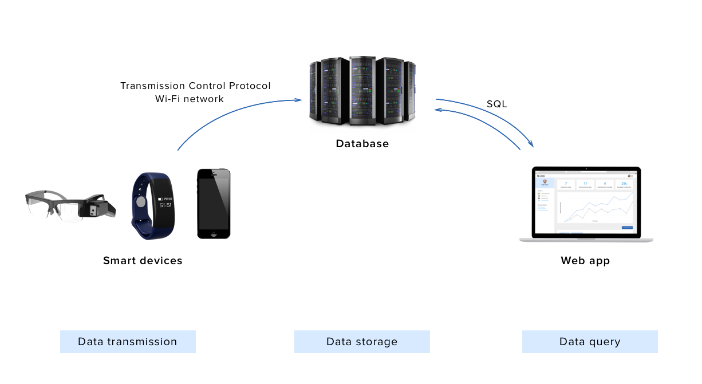

*Team effort for a Mastery class — UX Research and Design, Sept-Dec 2017
For Games User Research Summit 2017, my peers and I proposed a novel wearable system involving haptic feedback, to encourage social interactions for hypo-sensitive children on the (autism) spectrum. Wearables would detect when children are in proximity of each other, and then nudge them to interact with each other (shake hands). For our Mastery class in Fall 2017, we decided to develop the web component (dashboard) of this system that would allow parents and therapists to monitor their child's social behavior.
From statistics obtained in our research phase, we noted that 1 in 45 children were diagnosed to be on the spectrum (ages 3 to 17 years) as recorded in 2015. Children diagnosed with Autism Spectrum Disorder(ASD) have difficulty learning through traditional means as they struggle with social interactions, communications and sensory processing. This also complicates daily life or parents and strains families financially.
The primary stakeholder for the wearable was hypo-sensitive children aged 6-12 years with secondary stakeholders identified as parents of those children and therapists. But for the web component of the system, we identified parents/ caretakers and therapists as our primary audience as the system would serve different needs of both the demographics.
We were looking to truly understand the needs and frustrations of the parents and possibly extend to those farther from their immediate social circles. We wanted to get insights into the behavior of children and their typical interactions so we relied on exploratory research methodologies to gather data. We analyzed the responses received through 2 interviews with subject-matter experts (SME), 7 survey responses, and multiple research literatures.
Our main findings were as follows:
The perception of this feature resulted from a combination of visuals and the tone of the copy. The ultimate goal was to make the users perceive the feature as a helper and not as alert. I developed and tested various icon iterations to improve the visuals.
Through our meeting with the SMEs, we realized that every child on the spectrum has different needs. This meant that a solution for one child may not work well for another child. Extending this to the parents’ perspective, he mentioned that some parents might wish to have a superficial view of the data in the web app while some may prefer to read richer data.
Based in our research insights, we decided that an optimal solution for the product would have superficial data in the landing (home) screen with an added functionality for parents to probe deeper and examine specific data.
We looked at existing dashboards to see how they handled data visualization and reporting. We wanted to display easily digestible smaller chunks of information up front. We also wanted parents to view detailed reports and download them. The dashboard was also designed to support multiple accounts (for multiple children).
Designing for a special population was difficult, since we had a hard time reahing out to parents of children on the spectrum. Due to the nature of our project, we could not test the dashboard designs with our users, so we had to forego evaluating our designs. We realize that our final design is not perfect and it may have some usability issues which we would love to uncover when we get back to this project in the near future.